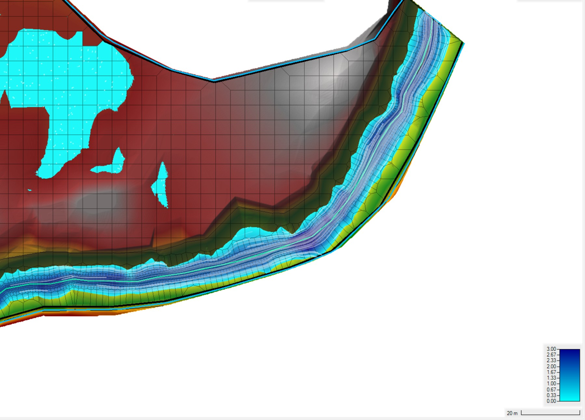
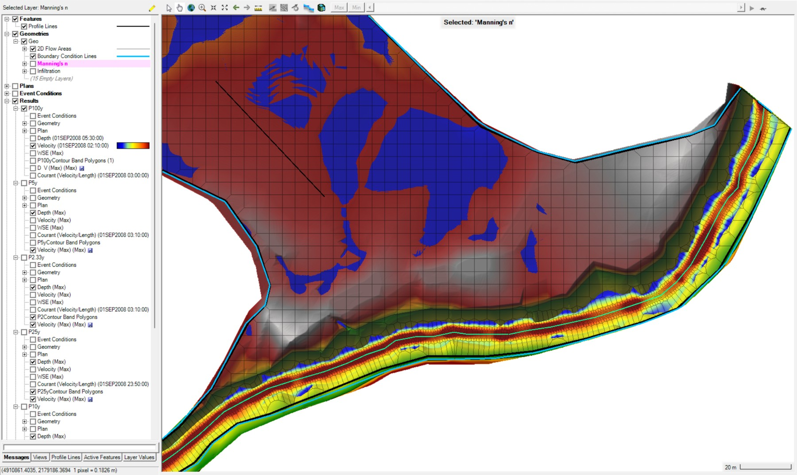
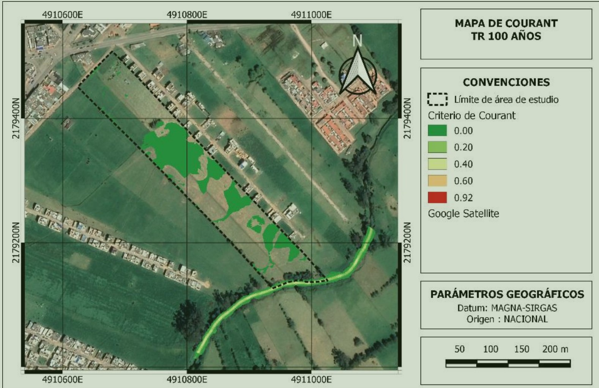

HEC-RAS 2D · Direct rainfall
Rainfall-driven 2D flood dynamics
An unsteady 2D hydraulic model configured to analyse rainfall-driven inundation and fluvial dynamics.
Role
Model geometry, parameterization, simulation and diagnostics
Model geometry, parameterization, simulation and diagnostics
Methods
2D mesh, spatial roughness, rainfall forcing, infiltration and Courant control
2D mesh, spatial roughness, rainfall forcing, infiltration and Courant control
Tools
HEC-RAS 2D, GIS and terrain processing
HEC-RAS 2D, GIS and terrain processing
Technical scope
The model combined terrain representation, computational-mesh design, spatial Manning roughness, infiltration and direct-rainfall forcing. Results were reviewed through depth fields, flow patterns and numerical-stability diagnostics rather than relying only on final flood maps.




Professional note
Project-specific names, client information and identifying map panels were omitted or cropped. The images are presented solely as evidence of technical capability; they do not constitute official deliverables or authorization to reuse project data.